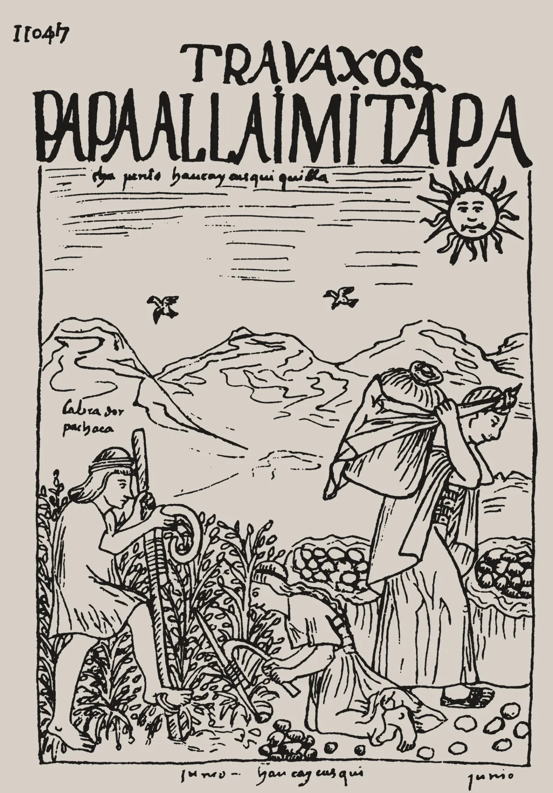

· Edición 36 · 4 min de lectura
La papa subió 78% en un año, tras venderse a pérdida

Dibujo de Felipe Guamán Poma de Ayala, 1615 · Dominio público, vía Wikimedia Commons
La papa subió 78% en un año, tras venderse a pérdida
Ver todo el tema, de principio a fin →
En pocas palabras. En septiembre, la papa costaba cerca de 78% más que un año antes, según el DANE; en 2025 se vendía por debajo de lo que costaba sembrarla. El vaivén golpea el mercado de todos y el ingreso de quien cultiva, porque casi todos siembran mirando el precio de hoy. Pactar el precio antes de sembrar, como en Bélgica, protege a quien tiene contrato.
El dato curioso. En 1537, los hombres de Gonzalo Jiménez de Quesada subían al altiplano de lo que hoy es Colombia buscando oro. En Sorocotá encontraron, en cambio, un tubérculo que compararon con una trufa. Es uno de los primeros registros europeos de la papa, según el Centro Rachel Carson, de Múnich. Buscaban oro; encontraron el almuerzo.
Qué pasó. Quien compra papa para el caldo ya lo notó. El 8 de octubre, el kilo iba en 2.950 pesos en Corabastos, la central mayorista de Bogotá, y en 3.550 en la de Antioquia.
Según el DANE, la papa subió 67,7% en lo corrido del año.
Hoy, quien cultiva gana: recibe entre 1.756 y 1.948 pesos por kilo, según un dirigente gremial citado por El Colombiano. Hace un año, Fedepapa, el gremio de los cultivadores, hablaba de 350 en la finca.
¿Por qué pasa?
- Se siembra con el precio de hoy. Si la papa está cara, muchos siembran más; meses después cosechan todos a la vez y el precio cae. Así lo describe la UPRA, la entidad de planificación rural del Gobierno, citada por la Universidad Javeriana Cali.
- No se puede guardar. Casi toda se vende fresca: la papa que sobra no espera a mejores precios.
- Quien pierde, deja de sembrar. Tras las pérdidas de 2025, la siembra bajó entre 13% y 15% en octubre, según el dirigente citado. Menos papa, precio arriba.
2020
Cierran restaurantes y hoteles
Con la pandemia cae la demanda y el precio se desploma. A comienzos de 2021, Fedepapa decía que aún no cubría los costos de producción.
Enero de 2022
La papa sube 140% en un año
Muchos habían dejado de sembrar. Fue el alimento que más subió, según el DANE.
2023 y 2024
Buenos precios
Según Fedepapa, crece el área cultivada.
Julio de 2025
350 pesos el kilo en la finca
Mientras en la ciudad cuesta 2.500. Se pierden entre 11 y 15 millones de pesos por hectárea; los cultivadores piden un precio mínimo y amenazan con un paro.
Agosto de 2025
Once meses de caída
El precio promedio al productor es de 796 pesos el kilo, 57% menos que un año antes.
Septiembre de 2026
Cerca de 78% más cara que hace un año
El área sembrada había bajado. El ciclo da otra vuelta.
Fuente: La República; El Espectador; El Tiempo; Fedepapa; DANE, citado por El Colombiano
Ya pasó antes. Hacia 1930, tres economistas, en Italia, Países Bajos y Estados Unidos, explicaron por separado este vaivén, según el historiador económico Emeric Lendjel. Hoy se le conoce como el teorema de la telaraña. Tiene casi un siglo y sigue cosechando.
El patrón. Cuando todos deciden con el precio de ayer, todos se equivocan a la vez. Lo que calma el vaivén es mirar hacia adelante.
¿Alguien lo ha resuelto? Nadie acaba el ciclo, pero hay formas de proteger a quien cultiva.
En Bélgica también se sembró de más tras los buenos precios de 2023 y 2024, y el precio libre de la papa para la industria bajó a unos 15 euros la tonelada.
Pero entre 70 y 80 de cada 100 toneladas ya estaban vendidas con contrato, a precio fijo pactado meses antes, según Belgapom, el gremio del sector. La caída golpeó sobre todo a quien sembró sin contrato.
Una revisión sistemática publicada en 2018 por Giel Ton y otros reunió 22 estudios en 13 países de ingreso bajo y medio. La agricultura por contrato subió el ingreso de los campesinos entre 23% y 54%, en promedio.
En Estados Unidos, cada marzo el Departamento de Agricultura publica cuánto piensan sembrar los agricultores. Cada uno ve hacia dónde van los demás.
Colombia ya lo ensayó: en 2019, «Coseche y venda a la fija» pactaba precio con el comprador antes de producir. No encontramos una evaluación de sus resultados.
Pero ojo.
- El contrato aguanta mal la bonanza. En 2021, cuando el café se disparó, caficultores colombianos dejaron de entregar hasta un millón de sacos ya vendidos a precio más bajo, según Reuters.
- Los promedios esconden casos. Los contratos que salieron mal se publican menos, advierten los autores de la revisión.
Qué hacer con esto
Para ir pensando. La papa cara no suele durar: el precio alto anima nuevas siembras. Quien cultiva puede averiguar, antes de ampliar, cuánto siembran los vecinos y si algún comprador ofrece contrato.
Ojo con el cuento. «Es culpa de los intermediarios» o «de los campesinos»: casi siempre es más simple, y más difícil. La cosecha de todos llega a la vez, o no llega.
Para quien quiera másDos lecturas
Un precio mínimo garantizado. En 2025, los cultivadores pidieron precios mínimos por carga, como el que el Gobierno fijó para el arroz. El pequeño papero no puede negociar con la industria: sin un piso, cada caída se lleva cosechas y créditos.
Contratos y mercado, no precios fijados. Un precio fijado anima a sembrar justo cuando ya sobra, y alguien paga la diferencia. Mejor repartir el riesgo con contratos voluntarios e información pública sobre cuánto se siembra.
Quién decide y cuándo
Quién decide. El Ministerio de Agricultura, con el Consejo Nacional de la Papa y su plan de ordenamiento productivo a 20 años.
Cuándo. No hay una decisión con fecha; el plan fija su cronograma cada año.
Cómo participar. Los cultivadores, por sus asociaciones y por Fedepapa.
Para quien quiera másLa paradoja del día
En 2025, al cultivador le pagaban 350 pesos por un kilo que en la ciudad costaba 2.500. En ningún año el precio dijo cuánta papa sembrar: solo cuánta se había sembrado.
Para conversar
La pregunta. ¿Quién debería cargar con el riesgo de que la papa valga poco: el cultivador, el comprador, el Estado o el consumidor? ¿Y qué podríamos hacer para que esa carga no caiga siempre en el mismo?
Para leer más
1493: una nueva historia del mundo después de Colón, de Charles C. Mann (Katz Editores, 2013; traducción de Stella Mastrangelo; el original, en inglés, es de 2011). Cuenta cómo el intercambio de plantas, animales y personas entre América y el resto del mundo cambió la historia, y la papa es una de sus protagonistas.
¿Le interesa ver las fuentes?
22 fuentes: 4 académicas, 2 oficiales, 1 de datos, 1 de una organización, 11 de prensa, 3 de referencia.
- Datos DANE. Boletín técnico Índice de Precios al Consumidor (IPC) septiembre de 2026
- Prensa El Colombiano. ¿Muy caro echarle papa al caldo? El kilo subió 78% en el último año: esto vale en Medellín y Bogotá
- Prensa El Tiempo. Las razones que podrían llevar a los paperos de Colombia a convocar un nuevo paro como el de los arroceros
- Prensa El Tiempo. Ante la crisis del sector, los papicultores le piden al Gobierno garantizar precios mínimos por carga
- Organización Fedepapa. Boletín 225
- Prensa La República. El precio de la papa aún no se recupera tras la crisis que atravesó el sector en 2020
- Prensa El Espectador. Alimentos: ¿Por qué ha subido tanto el precio de la papa?
- Académica Pontificia Universidad Javeriana Cali. La papa: entre la abundancia productiva y nuestra incapacidad regulatoria
- Oficial UPRA y Ministerio de Agricultura (copia publicada por Fedepapa). Plan de ordenamiento productivo para la cadena de la papa
- Prensa PotatoPro. Colombia ya tiene plan de ordenamiento productivo de la papa para los próximos 20 años
- Referencia Environment & Society Portal (Rachel Carson Center). First European Contact with Potatoes
- Referencia Hektoen International (Musgrave, 2018). The tuber that changed the world: a brief history of the potato
- Académica HAL, archivo abierto (Lendjel, 2000). The statistical origin of the cobweb diagram
- Prensa Belga News Agency. Potato sector faces growing oversupply as prices collapse
- Prensa FreshPlaza. European potato prices fall on oversupply
- Académica Institute of Development Studies (Ton y otros, World Development, 2018). Contract farming for improving smallholder incomes: what can we learn from effectiveness studies?
- Oficial Departamento de Agricultura de Estados Unidos (NASS). Prospective Plantings (31 de marzo de 2026)
- Académica farmdoc daily", Universidad de Illinois (Isengildina-Massa, 2016). What Do Prospective Plantings Tell Us About Planted Acreage?
- Prensa El Espectador. Hay más de 20.000 productores vinculados a la agricultura por contrato
- Prensa Gestión (Reuters). Principales compradores de café enfrentan pérdidas por incumplimientos caficultores de Colombia
- Prensa Blu Radio. Minagricultura fija regulación del precio del arroz paddy verde tras acuerdo con productores
- Referencia Marcial Pons (ficha del libro). 1493
Glosario
- Precio al productor: lo que recibe el cultivador por su cosecha, en la finca o en la central.
- Central mayorista: mercado grande donde se compra por bultos y toneladas para revender, como Corabastos.
- Agricultura por contrato: acuerdo en el que el cultivador y el comprador pactan precio, cantidad y calidad antes de la siembra.
- Teorema de la telaraña: explicación de por qué los precios del campo suben y bajan en ciclos cuando la siembra se decide con el precio del momento.
- Encuesta de intenciones de siembra: sondeo que pregunta a los agricultores cuánto piensan sembrar y publica el total antes de la siembra.
- Plan de ordenamiento productivo: hoja de ruta del Gobierno para una cadena agrícola: dónde y cómo producir, y cómo vender.
- IPC: índice de precios al consumidor; mide cuánto cambian los precios de lo que compran los hogares.
Nota metodológica
Hoy no hubo una decisión nacional con fecha que pesara más. Escogimos un nudo que toca la mesa de casi todos los hogares y el ingreso de cerca de 100.000 productores, con un hecho reciente: el dato del DANE del 7 de octubre. Es un tema que no duele, así que lleva algo de humor.
Hicimos unas 60 búsquedas en español e inglés: barrido de Colombia, América Latina y el mundo del 15 al 17 de octubre, revisión de las decisiones abiertas y búsquedas dirigidas sobre los precios de la papa, el ciclo de siembras y la agricultura por contrato. No pudimos abrir los documentos completos; trabajamos con resúmenes y resultados de búsqueda, y no les atribuimos más de lo que dicen. De 22 fuentes, 11 no son de prensa.
Quedó sin verificar o con límites:
- La variación de la papa en doce meses aparece como 78,28% en El Colombiano y como 78,24% en otros medios; decimos «cerca de 78%». El 67,7% del año y el 7,29% del mes vienen del boletín del DANE.
- Los 350 pesos por kilo y las pérdidas por hectárea son de Fedepapa, el gremio, citado por El Tiempo. El precio de hoy al cultivador y la baja del área sembrada vienen de un dirigente gremial citado por El Colombiano; no los encontramos en otra fuente.
- El mecanismo de las siembras lo leímos en el análisis de la Javeriana Cali, que cita el plan de la UPRA.
- Belgapom es un gremio; las cifras de Bélgica vienen de la agencia Belga y de FreshPlaza, un medio del sector.
- La revisión de Ton y otros reúne estudios cuasi-experimentales, con grupo de comparación; leímos su resumen. El análisis de la Universidad de Illinois revisa 20 años de encuestas de siembra frente a lo sembrado.
- El dato del café en 2021 es de Reuters, publicado por Gestión.
- El dato curioso viene del Environment & Society Portal, del Centro Rachel Carson, y de un ensayo de Hektoen International; las fuentes difieren entre 1536 y 1537 para la llegada a Sorocotá.
- La composición del Consejo Nacional de la Papa y el papel del SIPSA los marcamos como conocimiento general.
Puntaje de impacto. Filtro primero (las cuatro condiciones de nudo) y luego puntaje de 1 a 3 en alcance, gravedad, duración, cercanía y decisión en curso; gravedad y cercanía valen doble (máximo 21). Para los temas del mundo, la cercanía se mide por el canal por el que llegan a Colombia.
| Tema | Alcance | Gravedad | Duración | Cercanía | Decisión | Total | Resultado |
|---|---|---|---|---|---|---|---|
| El vaivén del precio de la papa | 3 | 2 | 2 | 3 | 1 | 16 | Elegido (edición 36) |
| Contratos de prestación de servicios | 2 | 2 | 2 | 3 | 1 | 15 | Descartado: anuncio sin norma |
| Helicópteros MI-17 en tierra | 2 | 2 | 2 | 3 | 1 | 15 | Descartado: cifras que no coinciden |
| Estrecho de Ormuz y petróleo | 3 | 2 | 1 | 2 | 1 | 14 | No llega a 17 |
| Presupuesto de 2027 | - | - | - | - | - | - | Votación el 19 y 20 de octubre |
| ONU y decreto de protesta | - | - | - | - | - | - | Un solo medio |
El vaivén de la papa pasa las cuatro condiciones de nudo: se repite (caídas en 2020 y 2025, alzas en 2022 y 2026), tiene un mecanismo (cada quien siembra con el precio del momento, y la papa no se puede guardar), alguien lo puede cambiar (el Ministerio de Agricultura, el Consejo Nacional de la Papa, Fedepapa y los compradores) y el daño se mide (pérdidas de 11 a 15 millones por hectárea en 2025; cerca de 78% más para el consumidor en 2026). Ningún otro tema llegó a 17: hoy hay una sola edición.
Revisamos las decisiones con plazo vencido o en los próximos siete días. Presupuesto de 2027 (ediciones 3 y 22): la Cámara vota el 19 y el 20 de octubre; solo anotamos la revisión. Concesiones de agua de la CAR (edición 18): el plazo aproximado del 14 de octubre pasó sin una decisión publicada; anotamos un plazo incumplido. Frenos de las motos (edición 32): no encontramos noticia; solo anotamos la revisión.
El grabado es un dibujo de Felipe Guamán Poma de Ayala, de su Nueva corónica y buen gobierno (1615), en dominio público, vía Wikimedia Commons: la cosecha de la papa en junio, en los Andes. Commons limitó varias búsquedas seguidas.
El libro no está en Santo & Seña: lo buscamos en su catálogo y no lo encontramos. Autor, año, editorial y traducción los confirmamos en la ficha de Marcial Pons y en una reseña académica.